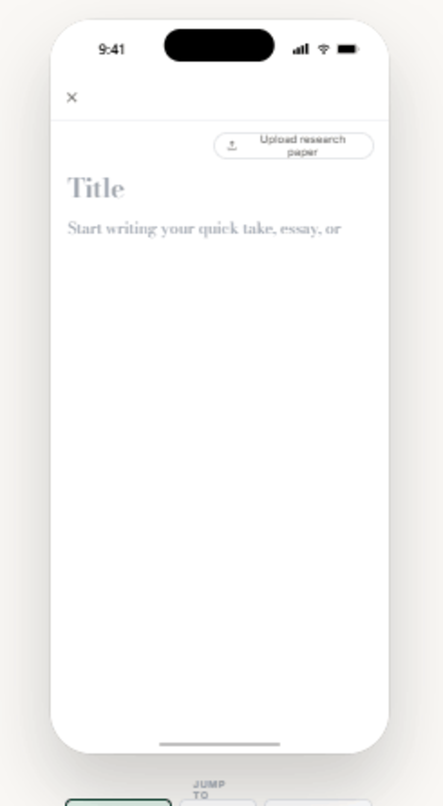
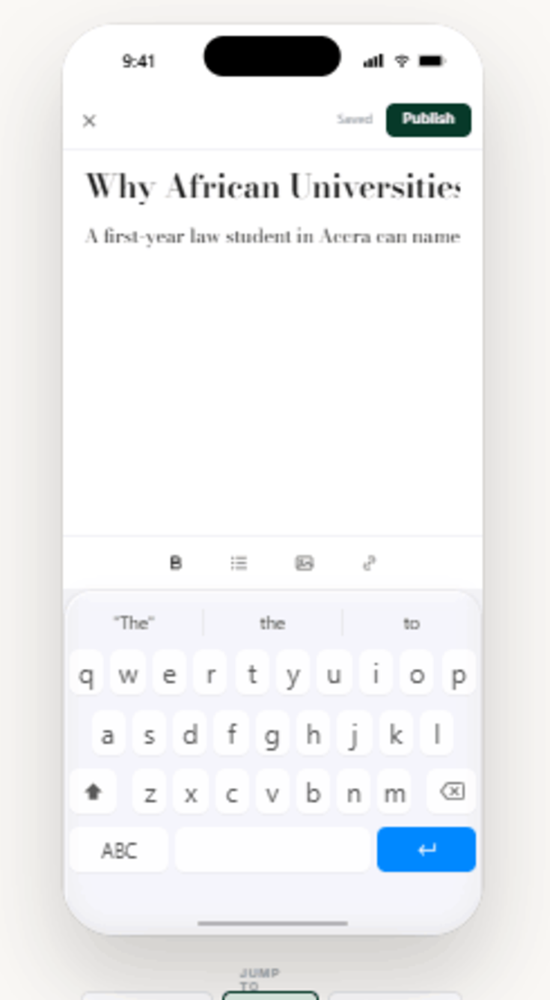
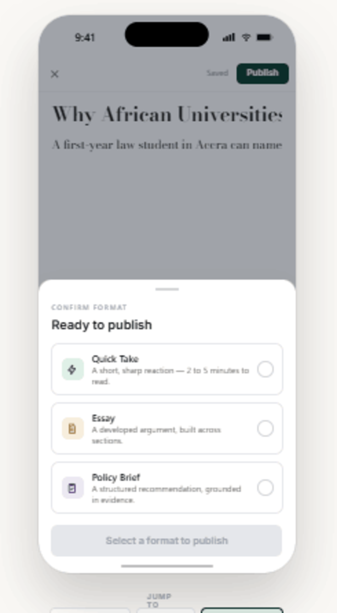

Mobile-first flow for starting a new piece of writing on Indegenius. Tapping Create goes straight into a blank canvas — no format-picker menu first. A separate "Upload research paper" option handles PDF-based research submissions. Once the writer has typed something, a floating toolbar and Publish action appear, and Publish opens a drawer where the writer confirms the format — Quick Take, Essay, or Policy Brief — before sending it live.
Three screens follow: (1) blank canvas, (2) writing with the floating toolbar, (3) the publish drawer.
Create opens directly into an empty title + body — no intermediate menu. "Upload research paper" sits apart as its own entry point, since research is a PDF upload rather than typed writing.

As soon as there is content, a formatting toolbar (bold, list, image, link) floats above the keyboard, a subtle autosave label appears, and Publish becomes available in the top bar.

Once the writer taps Publish, a drawer asks them to confirm the format — Quick Take, Essay, or Policy Brief — each color-coded per the brand's post-type identity. Publish stays disabled until a format is chosen.
